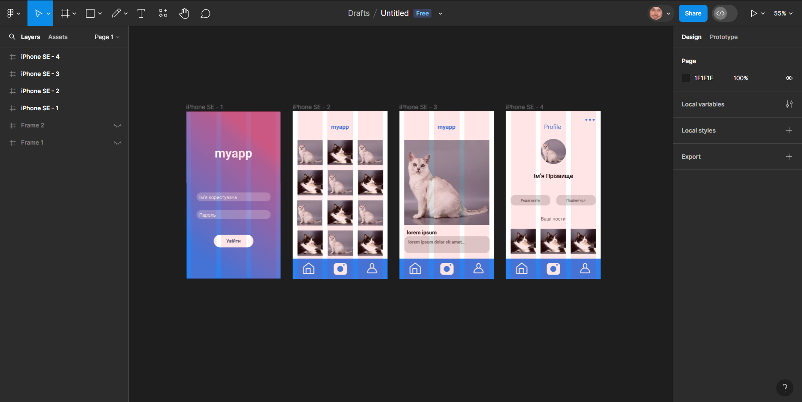
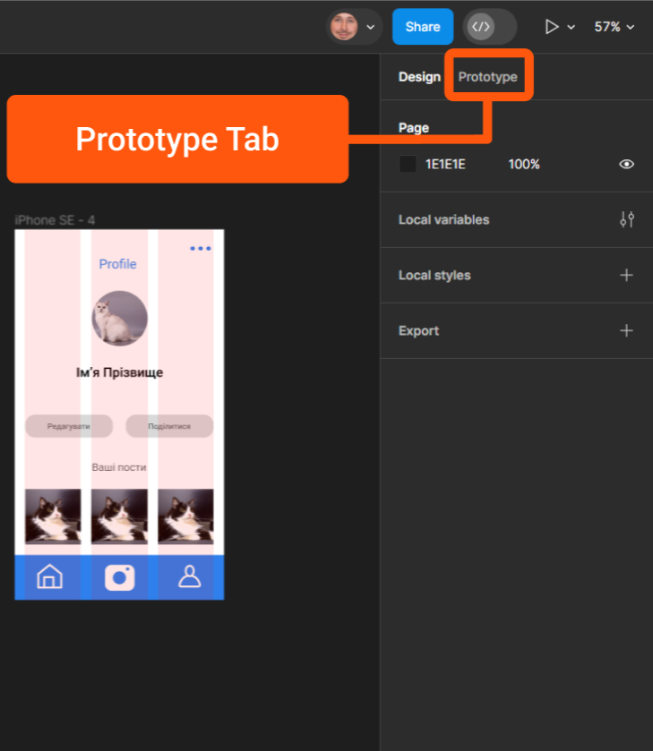
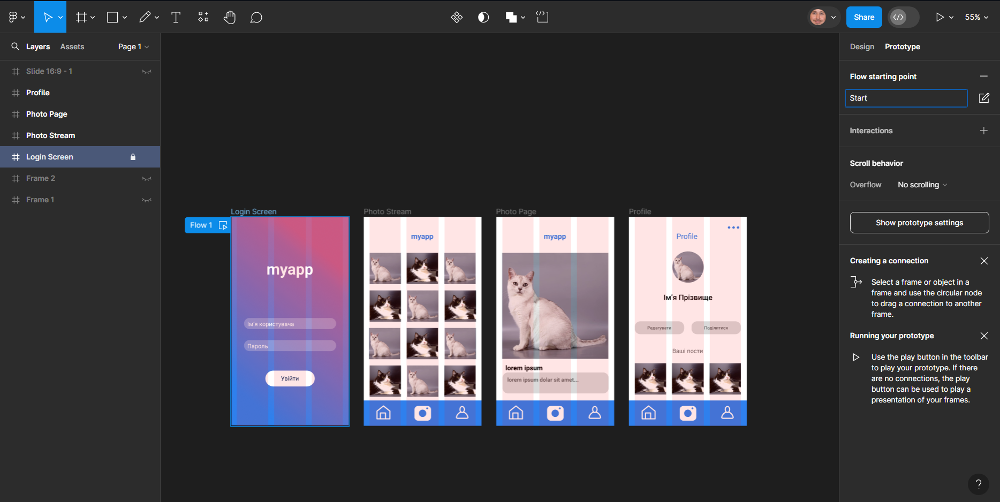
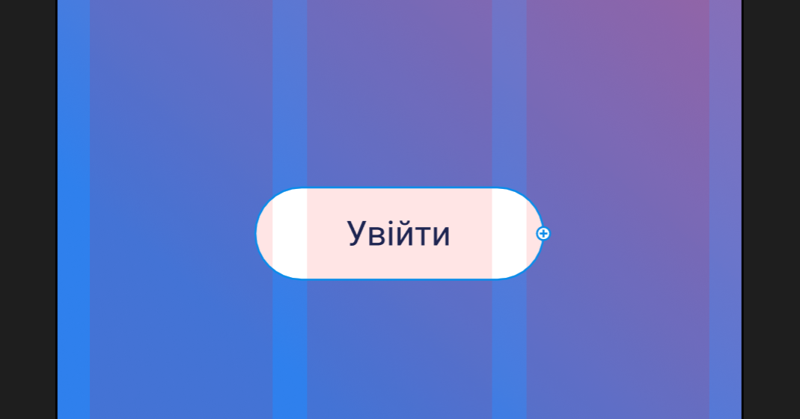
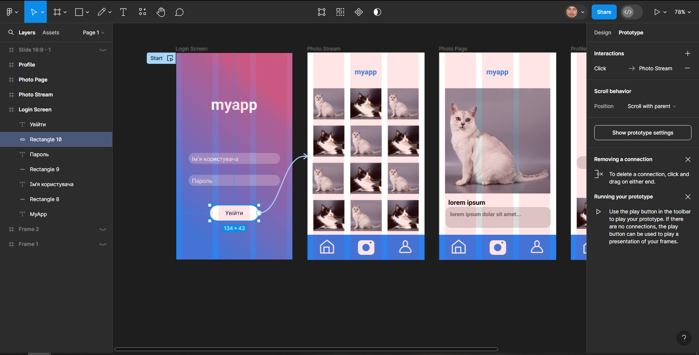
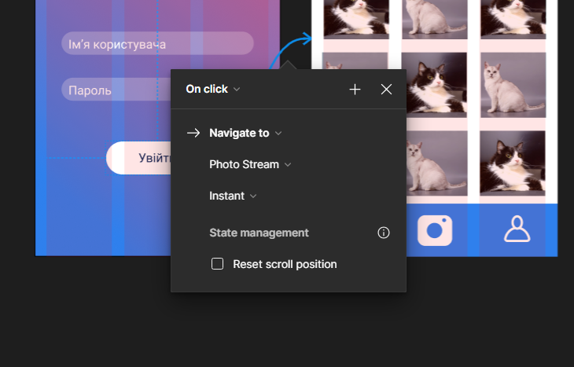
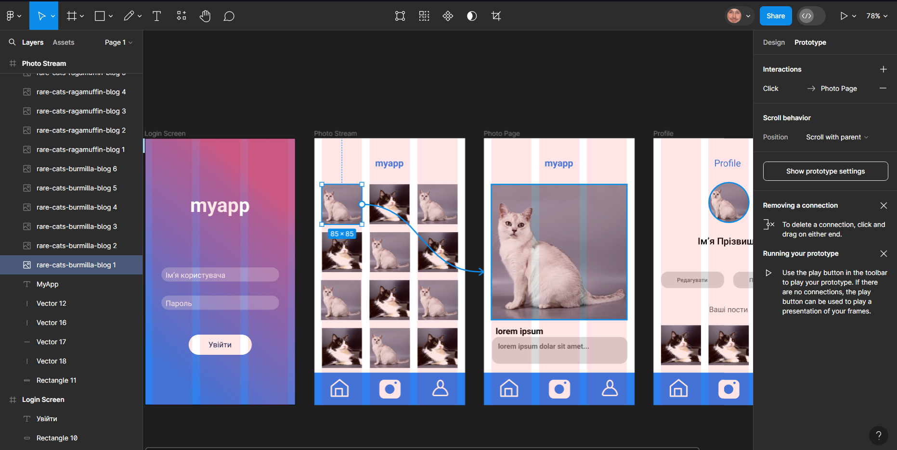
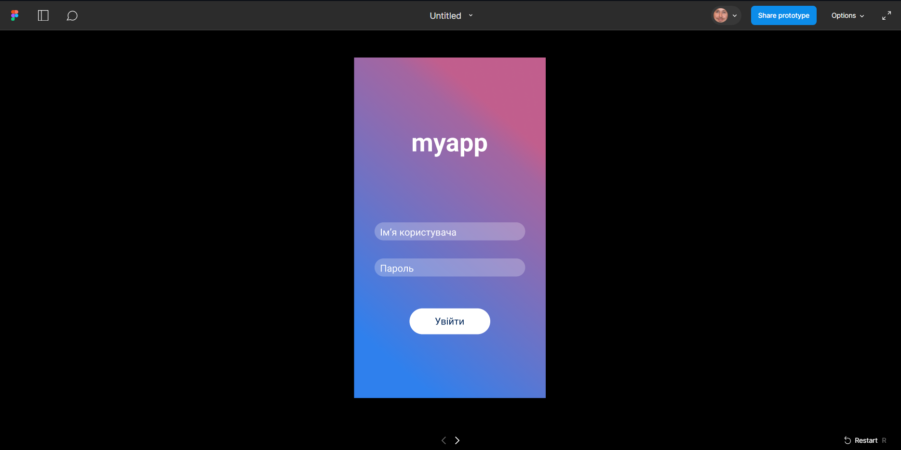

Створення прототипу
Вітаю на proFigma! На минулих заняттях ми розглянули основні функціональні можливості Figma та створили наш перший макет.
В кінці минулого заняття я запропонував попрактикуватися та створити декілька нових сторінок на задану тему.
Сьогодні ми продовжимо роботу над дизайном застосунку для обміну зображеннями та створими свій перший прототип.
Всі дії в цій статті будуть проводитися над заздалегідь створеними фреймами.

1.Перехід до прототипування
Досі ми працювали виключно з атрибутами на вкладці "Design" на панелі властивостей. Прийшов час перейти на вкладку "Prototype".

2.Встановіть стартовий фрейм
Прототипування у Figma працює шляхом створення зв’язків між фреймами та елементами в фреймах.
Коли ми представляємо прототип, користувач може натискати пов’язані елементи, щоб переміщатися між екранами макету.
Примітка: Перш ніж створювати будь-який прототип, доцільно переконатися, що ваші фрейми мають характерні назви.
Щоб перейменувати фрейм, все, що вам потрібно зробити, це двічі клацнути його мітку у верхньому лівому куті кожного фрейму, ввести нове ім’я та натиснути Enter.
В моєму випадку, назви кожного фрейму носять описовий характер: Login Screen, Photo Stream, Photo Page, Profile.
Перш за все для створення початкового фрейму нам потрібно встановити екран, з якого починається використання прототипу.
Обираємо фрейм "Login Screen" на панелі шарів, і бачимо зміни параметрів на вкладці "Prototype" на панелі властивостей.
Клікаємо на позначку "+" праворуч від напису "Flow starting point".

3.Встановіть зв'язки між фреймами
Якщо ми вибираємо фрейми або певні елементи, які знаходяться в них, коли відкрита вкладка прототипування, ми отримуємо додатковий круглий маркер на правій рамці обраного об’єкту.
Цей маркер дозволяє нам встановити, на який екран веде цей об’єкт, при активації.

Вибір кнопки "Увійти" при створенні прототипу
Нарешті, давайте використаємо це для створення з’єднання.
Спочатку виберіть кнопку "Увійти" на екрані входу.
Тепер необхідно перетягнути маркер на бажаний фрейм,
щоб створити з’єднання.
В моєму випадку, коли користувач натискатиме кнопку "Увійти" на прототипі, він переходить на екран "Photo Stream".

Після успішного підключення з’явиться невелике контекстне меню з описом того, як працюватиме взаємодія.
Перегляньте параметри спадного меню та змініть їх як побажаєте.

Давайте повторимо процес, пов’язавши одну з фотографій з екраном "Photo Page".

Спробуйте самостійно встановити зв'язки для кнопок навігаційного меню.
4.Протестуйте прототип
Ви можете запустити свій прототип, натиснувши кнопку "Present" у верхньому правому куті інтерфейсу Figma.
Зробімо це зараз, щоб перевірити, чи всі встановлені з’єднання працюють за планом!

Це заняття завершує цикл статей з основ роботи у Figma. Сподіваюсь, що ви отримали цілісне уявлення про процес створення макетів та прототипів у Figma та навчилися основним
методам і прийомам, які допомагають ефективно реалізувати свої дизайнерські ідеї.